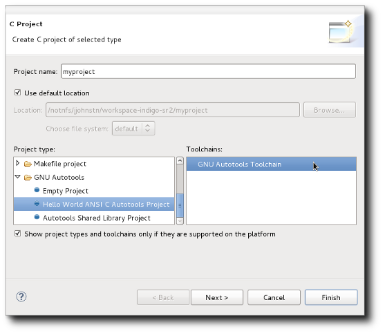
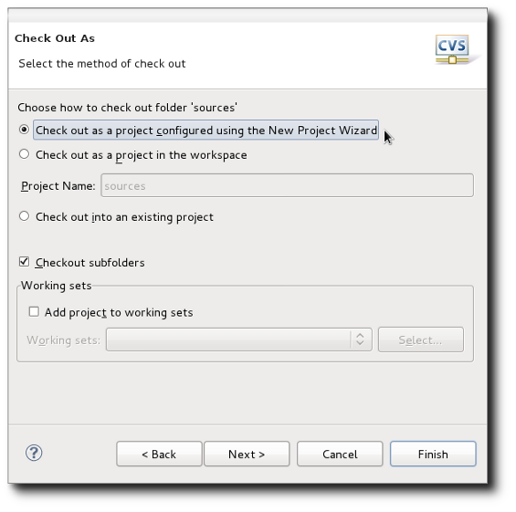
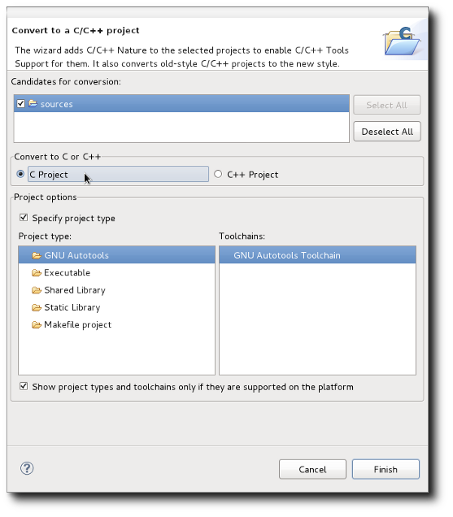
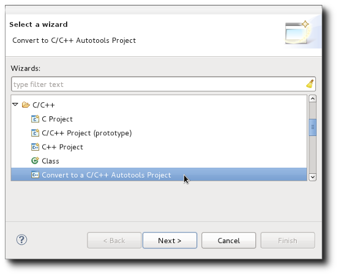
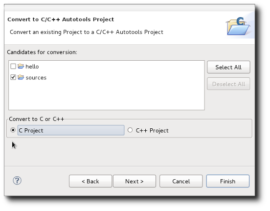

| Creating an Autotools Project | ||
|---|---|---|
|
|
|
|
| Supported Environments | Configuration | |
There a number of ways to create an Autotools project. The first method is through the CDT C and C++ Project wizards which can be activated from the File -> New -> C Project and File -> New -> C++ Project menu items, respectively, which are available while in the C/C++ Perspective. These two wizards can also be located by clicking on the File -> New -> Project... menu item and then opening the C/C++ folder found there.
Looking at the C Wizard, we see that there is a GNU Autotools category.

Opening the category, there are three choices: Empty Project, Autotools Shared Library Project, or Hello World Ansi C Autotools Project. The Empty Project template means that no files will be supplied to the new project while the Hello World project will supply a sample hello world program that uses Autotools for configuring the build. The Autotools Shared Library project is an example of how to use Autotools to create a shared library. The C++ Project Wizard also has the same GNU Autotools category and the three project templates: an Empty Project, Autotools Shared Library, and a Hello World C++ Autotools sample program. If you are creating a project from scratch, it is recommended that you use either the Hello World sample project or the Autotools Shared Library sample project and make modifications. Otherwise, you will need to create a configure script for the Autotools plug-in to invoke at build time or provide a Makefile so the configuration step does not fail.
The C and C++ Wizards can also be used when importing an existing Autotools project. For example, when importing a project from CVS using File -> Import... -> CVS -> you are given the choice to "Check out as a project configured by the new project wizard".

From the New Project menu, open the C/C++ category and choose either a C Project or C++ Project, depending on the type of project being imported. If the code is both C and C++, choose C++ Project.
Let's say you have a C application using Autotools and select C Project. This will bring up the C Project Wizard as displayed earlier. In this case, choose the Empty Project from the GNU Autotools category as you already have all the configuration files in place.
Another method to create an Autotools project is to convert an existing project. For example, if we import a project from SVN or CVS and do not configure using the new project wizard, the project will simply be downloaded into the workspace. At this point, it cannot be built or access various tools from the CDT.
To convert it, select the project in the Project Explorer and open the File -> New -> Convert to C/C++ Project menu item as found in the C/C++ Perspective. If in another perspective, this same wizard can be found by selecting File -> New -> Other... -> C/C++ -> Convert to a C/C++ Project. This brings up the C/C++ Conversion wizard.

Note how there is a set of projects that are candidates for conversion. This list contains any projects that are not already C or C++ projects. A C or C++ project includes regular CDT Managed Make and Makefile projects. Also note that the project you selected is automatically selected when the wizard opens.
There is a choice of C or C++ project and a set of project types to choose from. For Autotools, select the GNU Autotools category and this will convert to an Autotools project. Once converted, this project will not show up as a candidate project in the conversion wizard.
The final way to create an Autotools project is to use the Autotools Conversion wizard. This wizard allows one to convert from any form of project to an Autotools project. Obviously, converting a project that isn't actually C or C++ and using Autotools will result in undefined behaviour. You need to first select the project you wish to convert. After selecting, go to File -> New -> Other... -> C/C++, open the category, select "Convert to a C/C++ Autotools Project" and hit the Next button.

This brings up the following dialog:

Again, there are candidates for conversion. This list contains all projects that are not currently C or C++ Autotool projects. You are given the choice of C or C++ as with the standard C/C++ conversion wizard. Hitting the Finish button is all that is needed, but if you hit the Next button and continue on you can select referenced projects, if desired.
Once converted to an Autotools project, there is no UI method to convert back to a regular C/C++ project. If this is desired, you need to manually remove the .project, .cproject, and .autotools files from the project directory. This will effectively remove the natures and CDT settings for the project, allowing you to convert it again however you want.
|
|

|
|
| Supported Environments | Configuration |